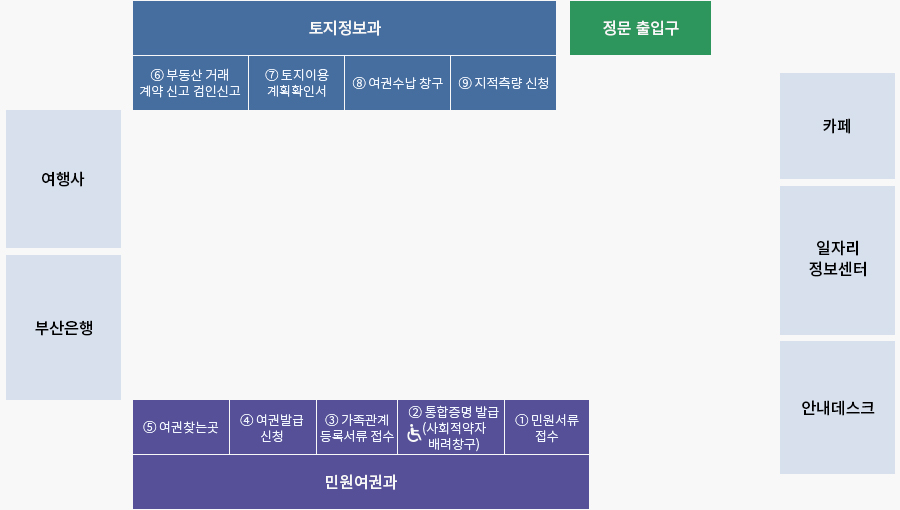

<div class="m_main">
    <div class="m_container">
        
        
        <div class="m_center">
            <div class="m_contents">
                <div class="top_con">
                    <div class="mc_title">
                        <h2>민원창구안내</h2>
                        <div class="mc_tit_img">
                            
                            
                        </div>
                    </div>
                    <div class="m_navi">
                        <ul class="mc_navi">
                            <li><span>▶</span></li>
                            <li>민원창구 <span>▶</span></li>
                            <li>편리한민원 <span>▶</span></li>
                            <li>민원창구안내</li>
                        </ul>
                    </div>
                    <div class="m_t_b_line">
                        
                    </div>
                </div>

                <div class="mc_box_01">
                    민원실 대표전화번호 : ☎ 051-550-4000
                </div>
                
                <h3>근무시간</h3>

                <ul class="bu_01">
                    <li><b>·</b>   평일 : 오전 9시 ~ 오후 6시 <span class="hi">(토·일·공휴일 휴무)</span></li>
                </ul>

                <h3>야간 민원실 운영안내</h3>
                <div class="mc_box_02">
                    직장인, 학생 등 평일 근무시간 내 여권 발급이 어려운 주민들에게 여권발급의 편의를 제공하고자 야간 민원실을 운영하고 있습니다.
                </div>

                <ul class="bu_02">
                    <li><b>·</b>   연장근무시간: 평일 업무종료 후 2시간(오후 6~8시)</li>
                </ul>

                <table class="mc_tb1">
                    <thead>
                        <tr>
                            <th scope="col">근무시간</th>
                            <th scope="col">근무내용</th>
                            <th scope="col">전화번호</th>
                            <th scope="col">비고</th>
                        </tr>
                        
                    </thead>
                    <tbody>
                        <tr>
                            <td>매주 목요일 18:00 ~ 20:00</td>
                            <td>여권접수 및 교부</td>
                            <td>☎ 051-550-4291~4</td>
                            <td>수수료는 현금, 카드 결제 둘다 가능(야간)</td>
                        </tr>
                    </tbody>
                </table>

                <h3>민원실 배치도</h3>

                

                <h4>창구번호</h4>

                <div class="mc_box_02">
                    <ul>
                        <li><b>1</b>민원서류 접수</li>
                        <li><b>2</b>통합증명 발급:주민등록 등·초본/인감(본인서명·가족관계증명)/토지·건축물대장/자동차등록원부/어디서나민원/사회적약자 배려창구</li>
                        <li><b>3</b>가족관계 등록 서류 접수</li>
                        <li><b>4</b>여권발급 신청</li>
                        <li><b>5</b>여권 찾는 곳</li>
                        <li><b>6</b>부동산 거래계약·신고 검안신고</li>
                        <li><b>7</b>토지이용계획 확인서</li>
                        <li><b>8</b>여권수납 창구</li>
                        <li><b>9</b>지적측량 신청</li>
                    </ul>
                </div>

                <h3>인터넷 민원</h3>

                <ul class="mc_link">
                    <li class="tit_link"><p>- 전자민원실</p><a href="#x">바로가기</a></li>
                    <li class="link_txt">전자민원에 대한 문의,건의 및 행정업무 관련 상담</li>
                    <li class="tit_link"><p>- 민원안내 / 신청</p><a href="#x">바로가기</a></li>
                    <li class="link_txt">민원에 대한 설명, 처리절차, 방법, 민원사례 등 안내</li>
                    <li class="tit_link"><p>- 민원처리공개</p><a href="#x">바로가기</a></li>
                    <li class="link_txt">민원 신청의 처리과정 및 처리내용을 공개</li>
                    <li class="tit_link"><p>- 행정처분공개</p><a href="#x">바로가기</a></li>
                    <li class="link_txt">행정의 투명성 확보를 위한 행정처분공개</li>
                    <li class="tit_link"><p>- 자치법규조회</p><a href="#x">바로가기</a></li>
                    <li class="link_txt">자치단체의 조례, 규칙 등 자치법규 검색</li>
                </ul>

                <div class="faction">
                    <div class="fac_box">
                        <div class="open_box">
                            <a href="#x"></a>
                        </div>
                        <div class="open_text">
                            본 저작물은 <span>'공공누리'</span> <a href="#x" class="fac_t_link">제4유형:출처표시+상업적 이용금지+변경금지</a> 조건에 따라 이용 할 수 있습니다.
                        </div>
                    </div>

                    <ul class="damdang">
                        <li><b>담당부서</b>민원여권과</li>
                        <li><b>담당자</b>조연주</li>
                        <li><b>문의전화</b>051-550-4262</li>
                    </ul>

                    <div class="question">
                        <div class="quest">
                            <p>이 페이지에서 제공하는 정보에 대하여 어느 정도 만족하셨습니까?</p>
                            <div class="input_radio">
                                <label>
                                    <input type="radio">매우만족
                                    <input type="radio">만족
                                    <input type="radio">보통
                                    <input type="radio">불만족
                                    <input type="radio">매우불만족
                                </label>
                            </div>
                        </div>

                        <div class="opinion">
                            <label>
                                <input id="coment" type="text" placeholder="여러분의 의견을 남겨주세요">
                                <a href="#x">의견등록</a>
                            </label>
                        </div>

                    </div>
                </div>
            </div>
        </div>
    </div>
</div>